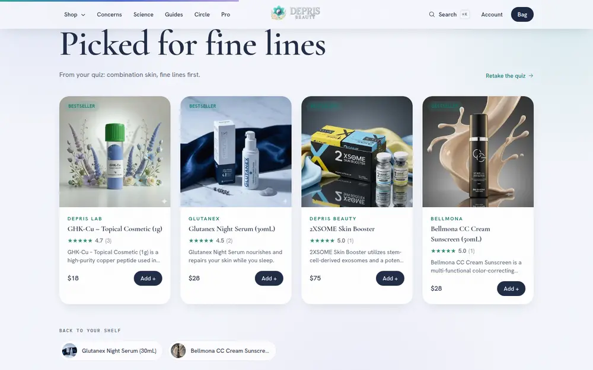
A shelf that remembers you
After the 60-second skin quiz, the home page greets the visitor by time of day and shows products picked for their concern. It also remembers what they looked at last time.
A comparative case study
The products, the prices, the warehouse in Cheyenne and the WooCommerce store all stay. What changes is how a visitor feels in the first ten seconds, and how much the site does for them after that.
This is a redesign, not a new business. These pieces carry straight across.
| Kept | How |
|---|---|
| Your products and prices | Pulled live from the WooCommerce store. The preview carries one real product from each of the 15 categories; the full 145 import with one command. |
| Your product photos | Served from deprisbeauty.com as they are today. |
| Your logo and name | The real lock-up sits centred in the header. The colours of the whole site are taken from it. |
| Your customer reviews | The four verified reviews on the store appear on the new site and link back to it. |
| Your promises | Authorized retailer, sourced in Korea, stocked in the US, same-day dispatch before 3pm Mountain Time. |
Most visitors decide whether to stay here. On the left, the current home page. On the right, the proposed one.
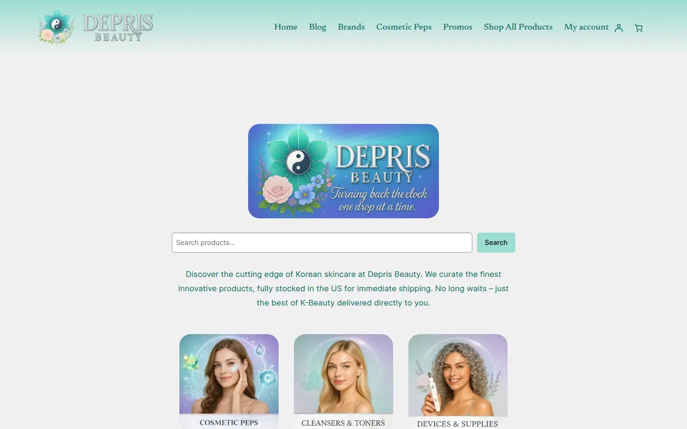
The hero is the logo again. A visitor sees the brand name three times before any product.
Search box first. That asks the visitor to already know what they want.
Category tiles use stock-style faces, so the page could belong to any skincare shop.
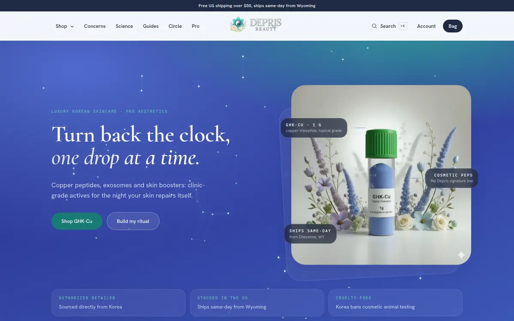
The product is the hero. The real GHK-Cu photo, lit like a specimen, with three true facts pinned to it.
One headline, two buttons. Shop the signature, or build a routine in 60 seconds.
Trust up front. Authorized retailer, stocked in the US, cruelty-free, before the first scroll.
Most skincare shopping happens on a phone, often in the evening. This is the same two pages at phone width.
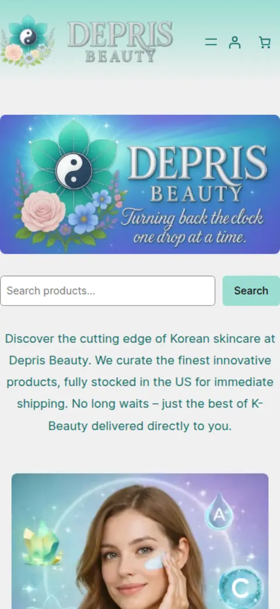
A newsletter pop-up covers the page the moment it loads, before the visitor has seen a product.
The banner, the search box and a paragraph fill the first screen. The first product is two screens down.
Headline, promise, two buttons, product. Everything that matters fits on one phone screen.
No pop-up. The newsletter has its own place at the end of the page, with preferences the visitor chooses.
This is where the sale happens. Same product, same price, same photo.
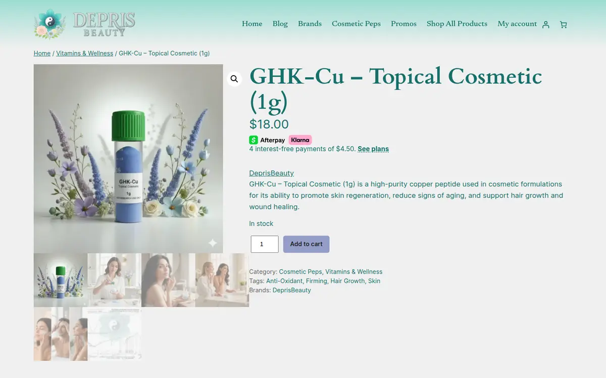
Title, price, a paragraph, a grey button. Nothing explains what the jar is or how to use it.
No reviews, no reassurance, no link to anything else on the site.
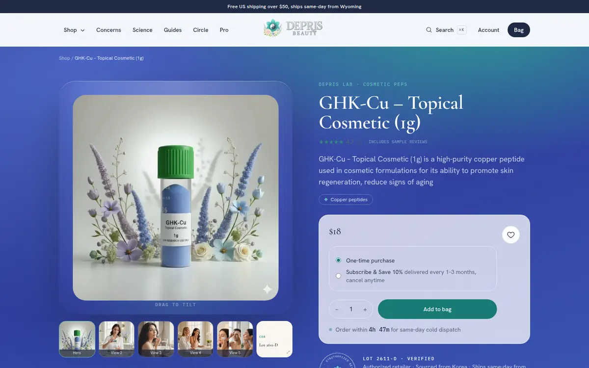
A proper stage. Tilt the photo, flick through the real gallery, see the lot number and verify it.
Everything a careful buyer asks: ingredient chips that link to the science, a live same-day dispatch countdown, subscribe and save, a wishlist heart.
Further down: reviews with a breakdown, the guides that mention this product, and the FAQ answers about it.
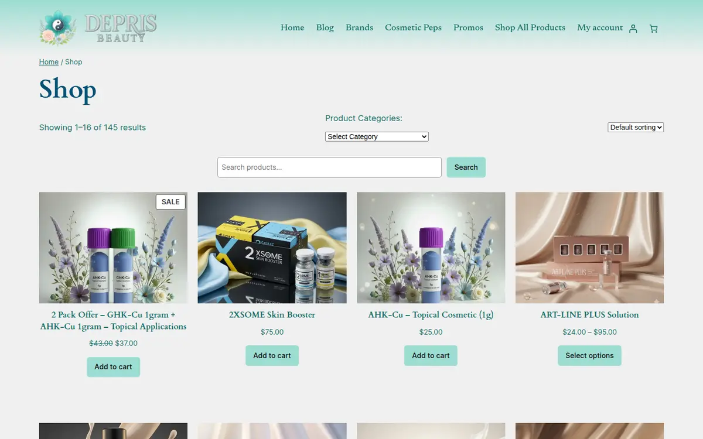
145 products, 16 per page, one sort menu. No way to narrow by skin concern or ingredient.
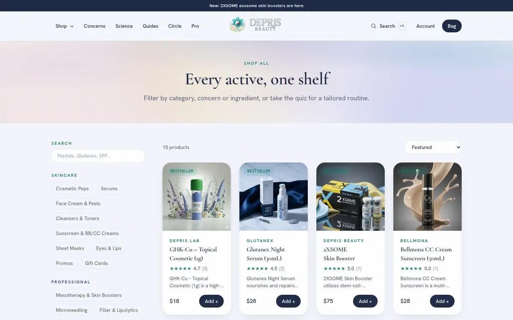
Filters that match how people think: skincare categories, professional categories, concern, ingredient, plus instant search.
Add to bag from the grid. The bag opens as a drawer with real thumbnails and a free-shipping meter.
Both pages, top to bottom, at the same scale. The current page is one screen of category tiles. The proposed page tells the story of the brand, then lets the visitor shop.
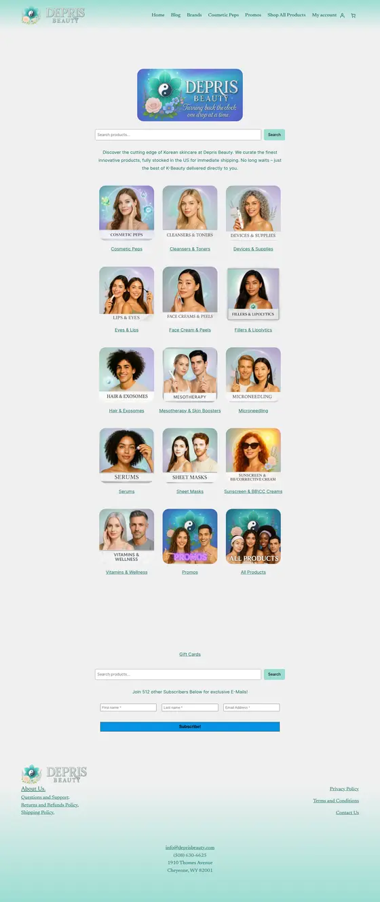
Banner, search, 16 category tiles, a second search box, a subscribe form, footer.
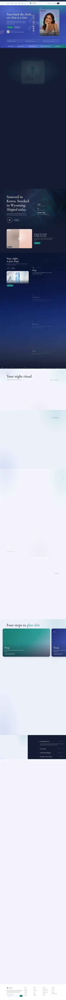
The drop, the facts, the night routine, your personal shelf, the edit, concerns, guides, the look, the standard, FAQ, journal, the Circle, clinics, the Monthly Drop.
Each one is built and working in the preview.

After the 60-second skin quiz, the home page greets the visitor by time of day and shows products picked for their concern. It also remembers what they looked at last time.
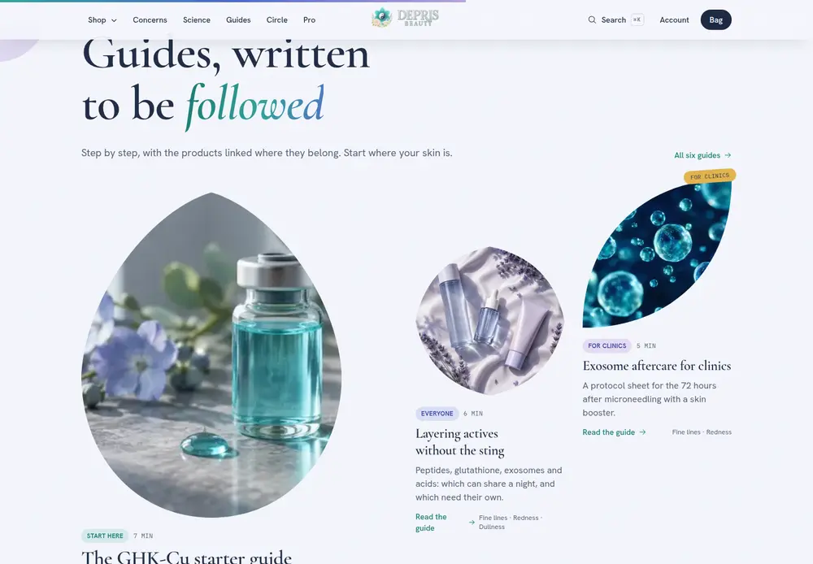
From the first GHK-Cu dilution to a clinic's exosome aftercare sheet. Every step links the product it means, so reading turns into buying.
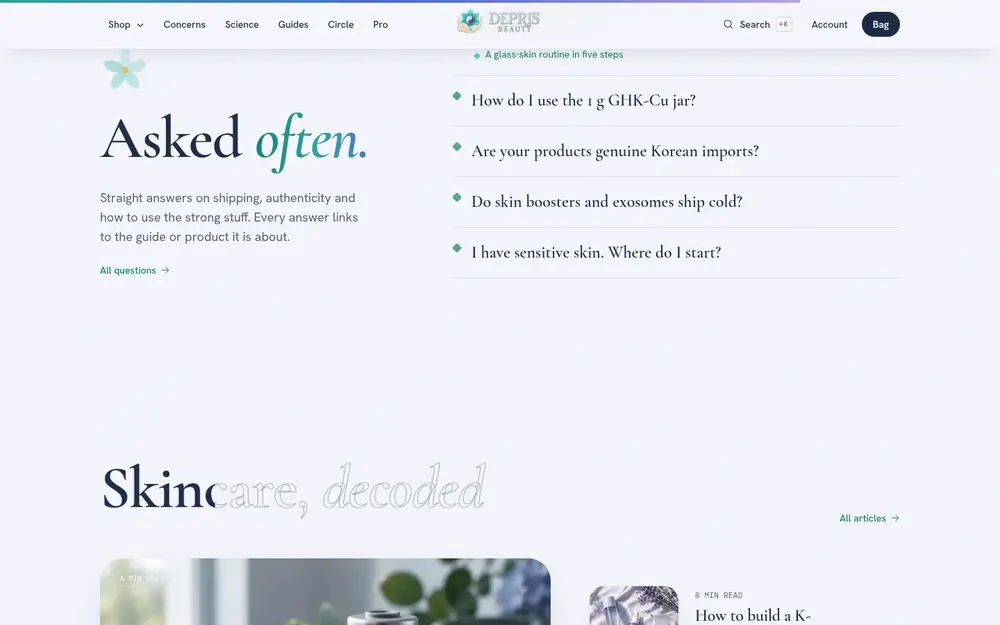
Shipping, authenticity, cold chain, how to use the strong stuff. Each answer links to its guide or product. Google can read it too.
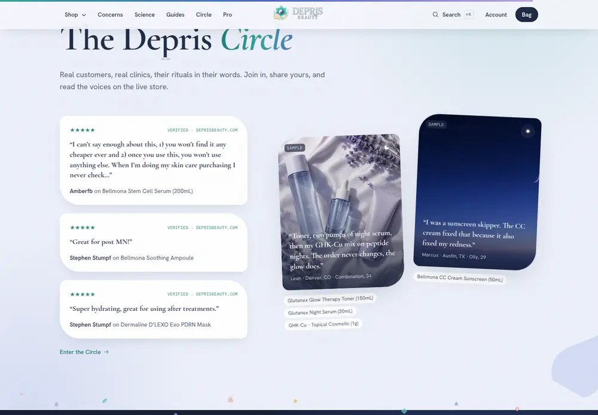
Your real verified reviews, member rituals with the products tagged, upcoming lives, a clinic corner, and a form to share your own ritual.
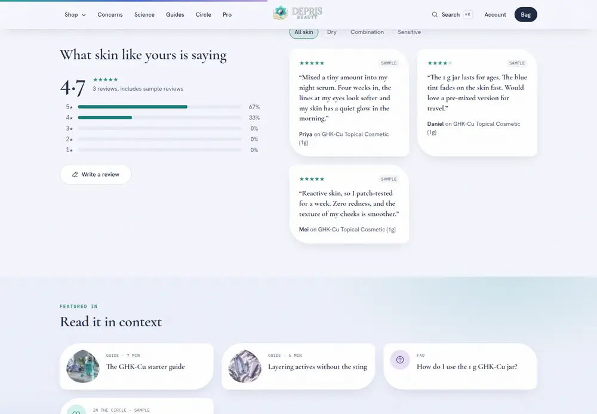
A star breakdown, filters by skin type, a write-a-review form. Where there are none yet, it says so plainly and invites the first one.
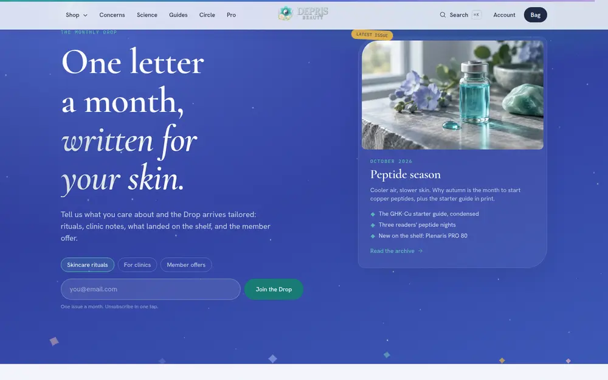
One letter a month. Visitors pick what they want, skincare rituals, clinic notes or offers, and see the latest issue before they sign up.
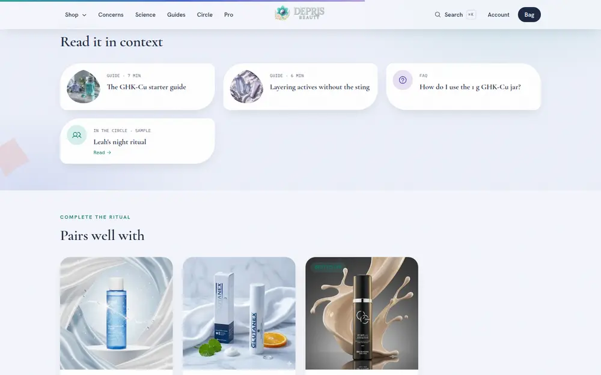
Products link to guides, guides link to products, FAQ answers link to both, and the community tags the products it talks about. A visitor is never at a dead end.
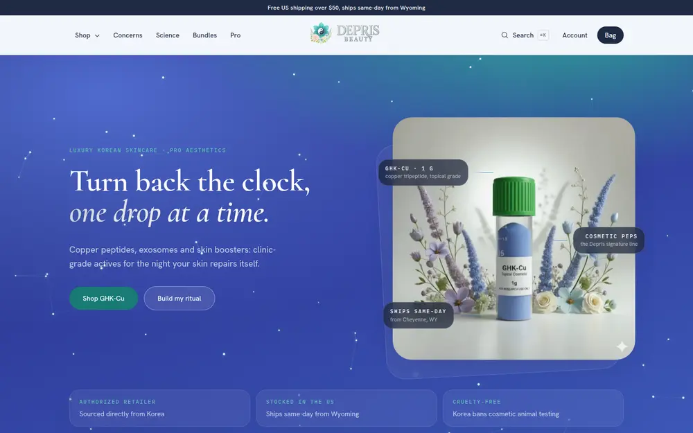
Colours taken from the real logo, petal shapes drawn from its lotus, and the GHK-Cu photo lit like something precious. It looks like one brand from the first screen to the footer.
Measured on 9 October 2026 with the same browser. Lower is better on all three.
Less data means the page appears sooner on a phone signal, and Google treats faster pages more kindly.
Each plugin on a WordPress site adds its own scripts. They slow the page and sometimes fight each other.
Fewer round trips, fewer things that can stall.
The current home page has no main headline for Google to read, and it loads five different typeface families. The proposed page has one clear headline and three faces chosen to match the logo.
Figures are what one browser downloaded and ran for the home page on that day. The current product page was heavier still, at about 15 MB and 134 scripts. Load times are not compared because the preview ran on a local machine, which would flatter it unfairly.
In plain terms, and without inventing numbers.
| Change | Why it should matter |
|---|---|
| Product first, trust first | A visitor who understands what GHK-Cu is, and believes it is genuine, is far closer to buying than one looking at a logo. |
| Lighter pages | Fewer people give up while a phone page loads. Faster pages also help search ranking. |
| Guides and FAQ | Fewer "how do I use this" emails, and more confident first purchases of the strong products. |
| Reviews everywhere | Your four real reviews are currently hard to find. On the new site they are on the home page, the Circle and the products. |
| The Monthly Drop | A reason to come back each month, and a list you own, segmented by interest from day one. |
| A clinic corner | Professionals are a different customer. They get their own entry point, their own guides and a pro account path. |
| A shelf that remembers | Returning visitors see their concern and their recent products first. It feels like a shop that knows them. |
We would rather you know exactly which parts are wired and which are showing the idea.
| Part | Status | Note |
|---|---|---|
| Products, prices, photos, categories | Real | From your WooCommerce store. |
| Verified customer reviews | Real | The four on the store today, linked back to it. |
| Facts: authorized retailer, Wyoming dispatch, 3pm cutoff, 145+ products | Real | Taken from your site and store. |
| Checkout | Preview | The bag works. Payment would route to WooCommerce or Shopify at build. |
| Sample reviews, member rituals, newsletter issues | Preview | Written to show the experience. Each one is visibly tagged "Sample". |
| Review, ritual and newsletter forms | Preview | They work on the page and say which system they connect to at build. |
| Lot verification and certificates | Preview | Shows how a lot code lookup would read. Needs your batch records. |
| Journal and guide imagery | Preview | Generated for the concept, to be replaced with your own photography. |
| Quality check | Done | All 49 pages tested at phone, tablet, laptop and desktop widths with no errors, no sideways scrolling, one headline per page and finger-sized links. |
Three steps. Each one leaves you with something you can use.
We will click through the preview together on a laptop and a phone, answer anything in this document, and agree what step one should include.
The design is also in Figma, with the colour and type foundations, the home page sections, every phone screen and the key desktop screens: figma.com/design/Ig5pfQBsohjqVY8hsMxWbq
Depris Beauty · 1910 Thomes Avenue, Cheyenne, WY 82001 · info@deprisbeauty.com